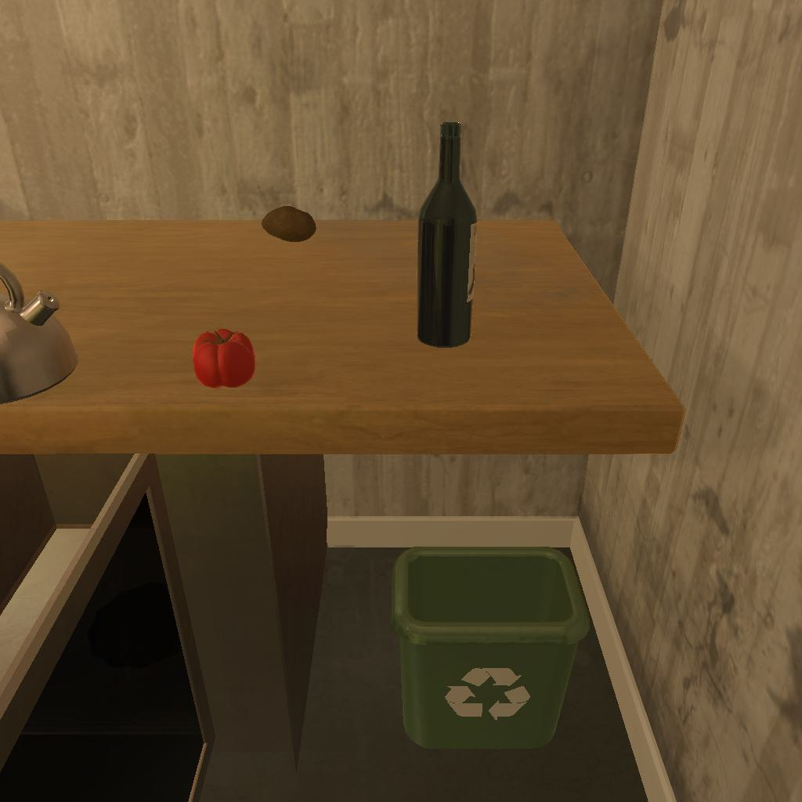
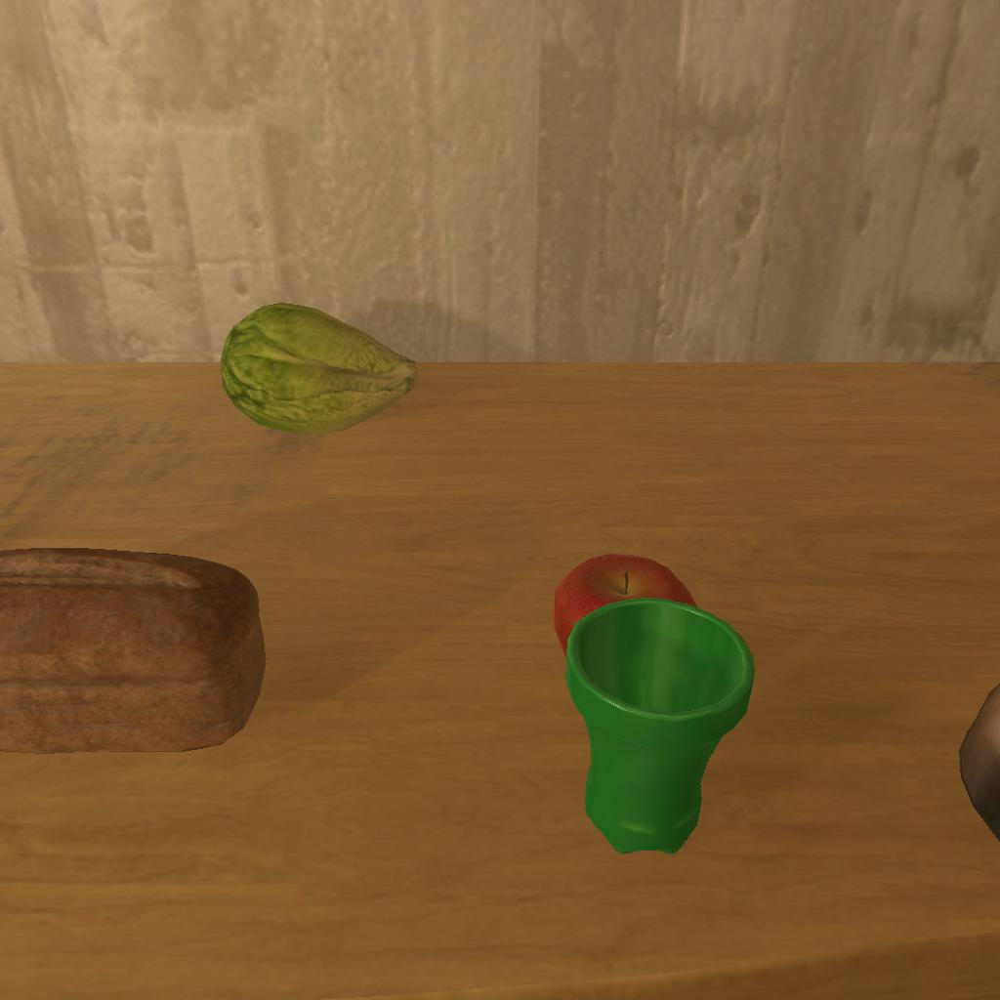

---------------------------------------------------------task: 26---------------------------------------------------------
--------------------------------------------------------------------------------------------------------------------------------------------------------------------
--------------------------------------------------------------------------------------------------------------------------------------------------------------------
Step:--------------------------------------------------------------------------9-------------------------------------------------------------------------------
----------------------------------------
VLM Prompt:
Image1:
Image2:
**Instruction**
1. Analyze the provided images to identify all visible household objects and compare the difference between images (e.h. whether the object is opened or not and taken on hand or not), focusing on those relevant to the task description "find two kettle and put them in cabinet."
2. Use the analysis of images and the task hint "The agent must find an object of the desired type, pick it up, find the correct location to place it, put it down there, then look for another object of the desired type, pick it up, return to previous location, and put it down there with the other object." to answer the question: what is the most reasonable action in the choices for the task description "find two kettle and put them in cabinet"?
3. Decide and write the answer using the template: The answer is: (i): , where i is the real number. If there is no desired object in images, search every place based on **Initial Observation** to find the object. And if no one is exactly correct, choose a similar answer.
**Initial Observation**
You are in the middle of a room. Looking quickly around you, you can see countertop (1), coffeemachine (1), cabinet (1-4), drawer (1-8), sink (1), sinkbasin (1), garbagecan (1), fridge (1), microwave (1), dresser (1), sidetable (1)
**Answer Choices**
(1): go to coffeemachine 1
(2): go to cabinet 1
(3): go to cabinet 2
(4): go to drawer 1
(5): go to sink 1
(6): go to sinkbasin 1
(7): go to cabinet 3
(8): go to garbagecan 1
(9): go to cabinet 4
(10): go to drawer 2
(11): go to fridge 1
(12): go to microwave 1
(13): go to dresser 1
(14): go to sidetable 1
(15): go to drawer 3
(16): go to drawer 4
(17): go to drawer 5
(18): go to drawer 6
(19): go to drawer 7
(20): go to drawer 8
(21): take bread 1 from countertop 1
(22): take cup 1 from countertop 1
(23): take lettuce 1 from countertop 1
(24): take apple 1 from countertop 1
(25): take kettle 1 from countertop 1
(26): examine countertop 1
**Answer**
Let's think step by step by following the instructions.
----------------------------------------
----------------------------------------
Original Response:
Firstly, we analyze the provided images to identify all visible household objects. Image 1 shows a kettle, a tomato, a bottle, and a potato on the countertop, and a recycling garbage can under it. Image 2 shows a lettuce, an apple, a cup, and bread on the countertop. There are no kettles in the cabinets or being held in either image.
Based on the task description "find two kettle and put them in cabinet," we need to locate kettles and place them in a cabinet. According to the initial observation, there is one kettle on countertop 1.
Using the task hint, the agent must pick up the kettle from countertop 1 and put it in a cabinet, then look for another kettle. Since there is only one kettle visible in the images, the agent would need to search other locations for the second kettle after placing the first one in a cabinet.
The most reasonable action from the choices provided, considering the task description and the fact that there is one visible kettle on countertop 1, would be to take the kettle and put it in a cabinet.
The answer is: (25): take kettle 1 from countertop 1
----------------------------------------
----------------------------------------
>>> Refine Original VLM Response and Get Pure Action: take kettle 1 from countertop 1
----------------------------------------
-----------------------------------------------------------------
Running time: 15.979313135147095 seconds
Total Money: 13.50698
-----------------------------------------------------------------
-----------------------------------------------------------------
Text Observation:You pick up the kettle 1 from the countertop 1.
-----------------------------------------------------------------
UNSUCCEED